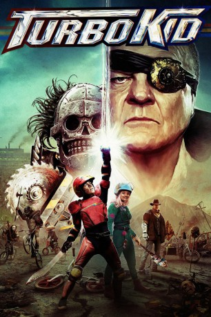
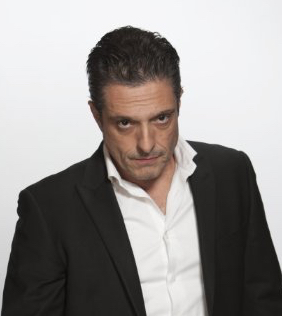

#2371 Turbo Kid
 gesehen am 04.11.2015
gesehen am 04.11.2015
 
 IMDB-Wertung: 6.7 / 10
IMDB-Wertung: 6.7 / 10  Metascore: 60
Metascore: 60 
"The Kid" lebt in der post-apokalyptischen Zukunft des Jahres 1997, ist ein großer Fan von Comics und fristet sein Dasein als Plünderer und Einzelgänger. Doch als er ein geheimnisvolles Mädchen namens Apple trifft, ändert sich das. Der Jugendliche muss sich seiner Furcht stellen und widerstrebend zum Held werden. Ungeachtet ihrer Bemühungen, unter sich zu bleiben, lässt der selbsternannte, sadistische Wasteland-Anführer Zeus nicht von ihnen ab und macht ihnen das Leben zur Hölle. Bewaffnet mit etwas mehr als blindem Glauben und einer antiken, turbogeladenen Waffe begibt sich "The Kid" auf eine unglaubliche Reise, um das wüste Land vom Bösen zu befreien und das Mädchen seiner Träume zu retten. Dabei lernt er, was Gerechtigkeit und Freundschaft bedeuten.
LINE DUBBED
Jahr: 2015
Dauer: 93 Minuten
FSK: 16
Land: Kanada Studio: Ledick FilmhandelTonspuren: DD2.0 - ,
Untertitel: Englisch,
Auflösung: 1080p (1920x808) Größe: 6840 MB
Genre: Action, Sci-Fi, Abenteuer
Regisseur: François Simard, Anouk Whissell, Yoann-Karl Whissell
Drehbuch: François Simard, Anouk Whissell, Yoann-Karl Whissell
Soundtrack: Jean-Philippe Bernier, Jean-Nicolas Leupi, Le Matos
Darsteller:
- Munro Chambers als The Kid
- Laurence Leboeuf als Apple
 Michael Ironside als Zeus
Michael Ironside als Zeus Edwin Wright als Skeletron
Edwin Wright als Skeletron- Aaron Jeffery als Frederic
-  Romano Orzari als Bagu
- Evan Manoukian als Young the kid
- Anouk Whissell als The Mother
- François Simard als The Father
- Tyler Hall als Bounty Hunter
- Yoann-Karl Whissell als Bald Guard
 Abdul Ayoola als Guard #3
Abdul Ayoola als Guard #3- Jean-François Ferland als - Guard #11
- David Rigby als Odd-looking Man
- Jason Eisener als The Cook
 Marcello Bezina als Bird Clan Leader
Marcello Bezina als Bird Clan Leader Patrick Kerton als Gladiator #1
Patrick Kerton als Gladiator #1- Rob deLeeuw als Gladiator #2
- Luke Haigh als Guard #12 and #14
 Nathaly Thibault als Zombie
Nathaly Thibault als Zombie- Orphée Ladouceur als Female Guard
- Steeve Léonard als Scout
- Yves Corbeil als Turbo Général
- Martin Paquette als Giant Warrior
- Pierre Sigouin als Frederick's Brother
- Christian Picone als Guard #1
- Éric S. Boisvert als Guard #2
- Thomas Luccioni als Guard #4
- Sam B. Cloutier als Guard #5
- Maxime Lapointe als - Guard #8
- David Loiseau als Guard #9
- Nicolas Archambault als Guard #12
- Ara Ball als Guard #13
- Sylvain Lemaitre als Guard #14
- Hazgary Colin als Sentinel
- Louise Ménard als Old Lady
- Bruno Corbin als Transgender Prostitute
- Sylvain Legrand als Turbo Rider
- Félix Sylvestre als Zeus' Chauffeur
- Alex Stine als Prisoner #1
- Andrée Anne Godbout als Skeletron BMX Guard #1
- Kim Cormier als Skeletron BMX Guard #2
- Jodie Rimmer als Mother
- Geoff Houtman als Father
Datei: X:\2015(N-Z)\Turbo Kid (2015, FSK16, 1920x808).mkv seit 03.11.2015
Festplatte: HD 2015(A-Z)
 Es gibt insgesamt 161 Filme in der Gruppe '2015(N-Z)'
Es gibt insgesamt 161 Filme in der Gruppe '2015(N-Z)'